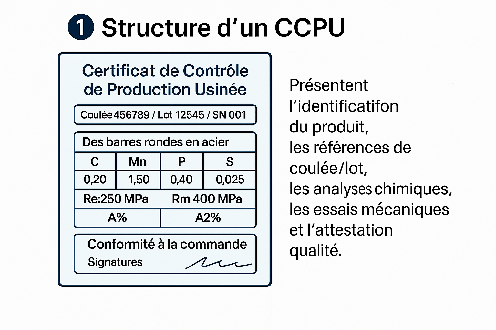
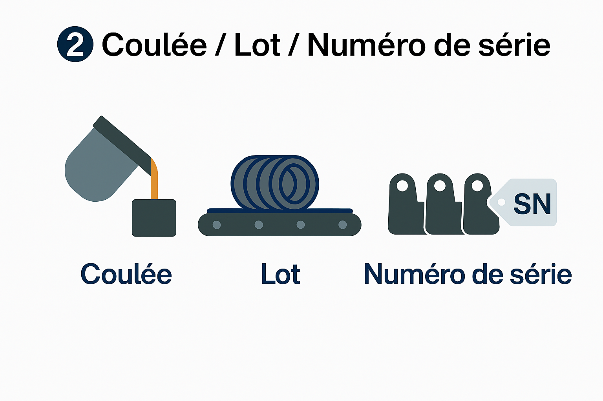
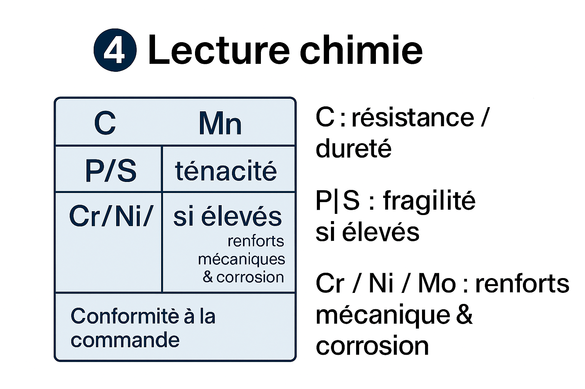
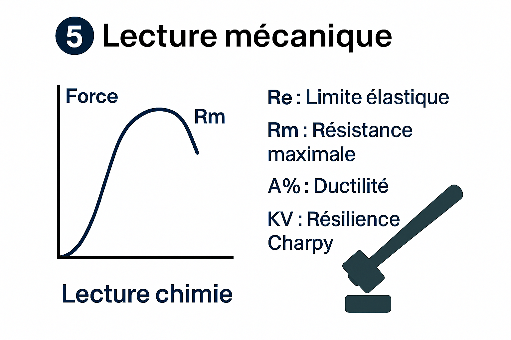
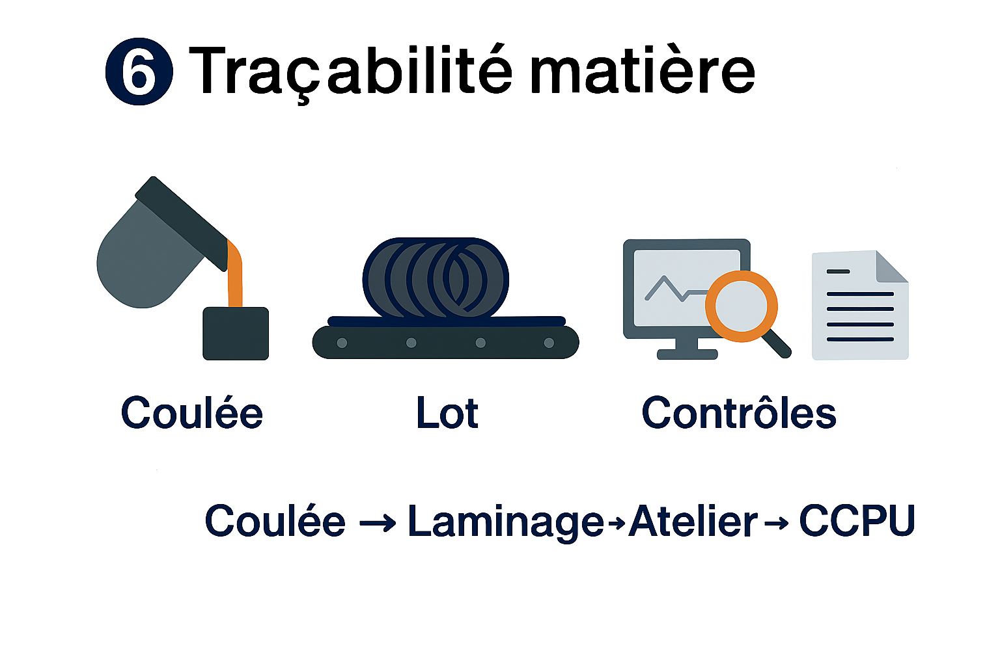
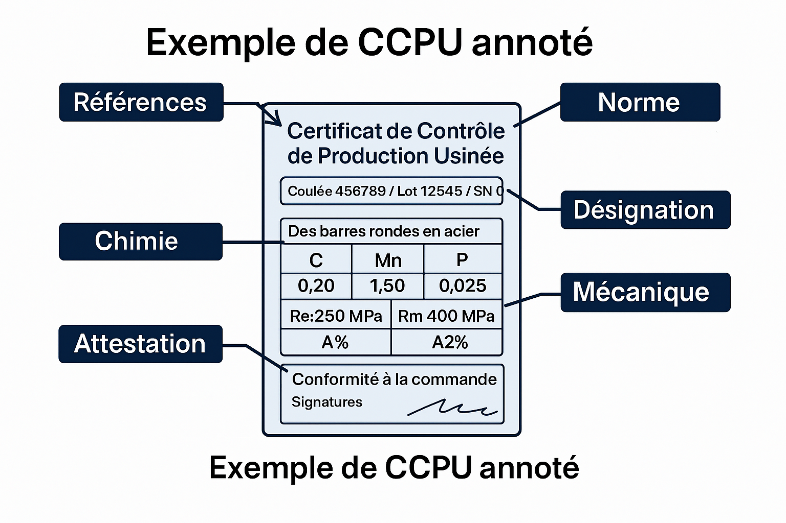

📘 Sommaire
- #structure1. Structure d’un CCPU
- #types2. Types EN 10204 (2.1 / 2.2 / 3.1)
- #coulée3. Coulée / Lot / Numéro de série
- #chimie4. Lecture chimie
- #meca5. Lecture mécanique
- #tracabilite6. Traçabilité matière
- #ccpu7. CCPU annoté
1️⃣ Structure d’un CCPU
Le certificat matière présente l’identification du produit, les références de coulée/lot, les analyses chimiques, les essais mécaniques et l’attestation qualité.

2️⃣ Types EN 10204
- 2.1 : Déclaration de conformité.
- 2.2 : Déclaration + essais de type.
- 3.1 : Résultats liés à la coulée/lot livré.
3️⃣ Coulée / Lot / Numéro de série

Coulée : métal issu d’une fusion.
Lot : fabrication identique.
Numéro de série : identifiant pièce.
4️⃣ Lecture chimie

- C : résistance / dureté
- Mn : ténacité
- P / S : fragilité si élevés
- Cr / Ni / Mo : renforts mécaniques & corrosion
5️⃣ Lecture mécanique

- Re : Limite élastique
- Rm : Résistance maximale
- A% : Ductilité
- KV : Résilience Charpy
6️⃣ Traçabilité matière

Flux : Coulée → Laminage → Atelier → Contrôles → CCPU.
7️⃣ Exemple de CCPU annoté
